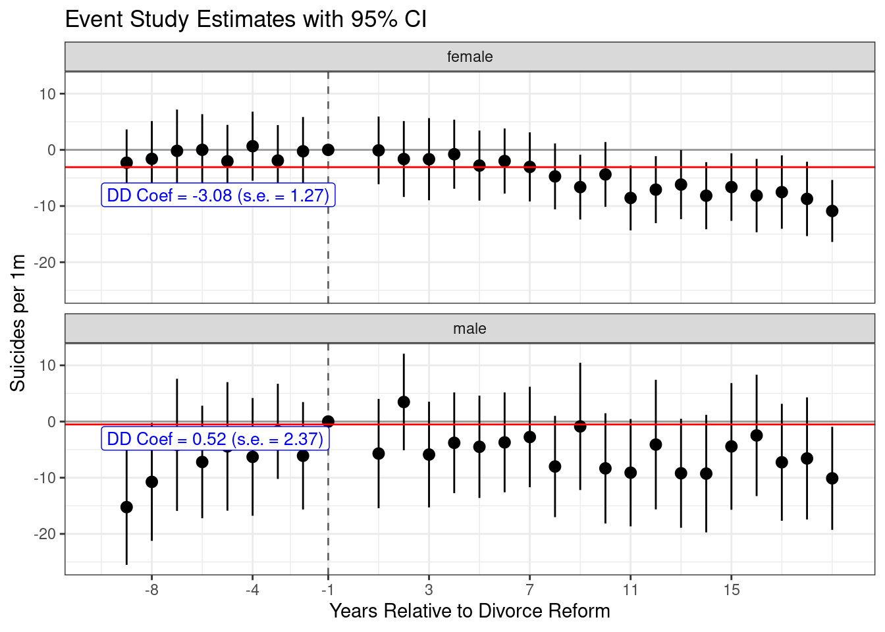
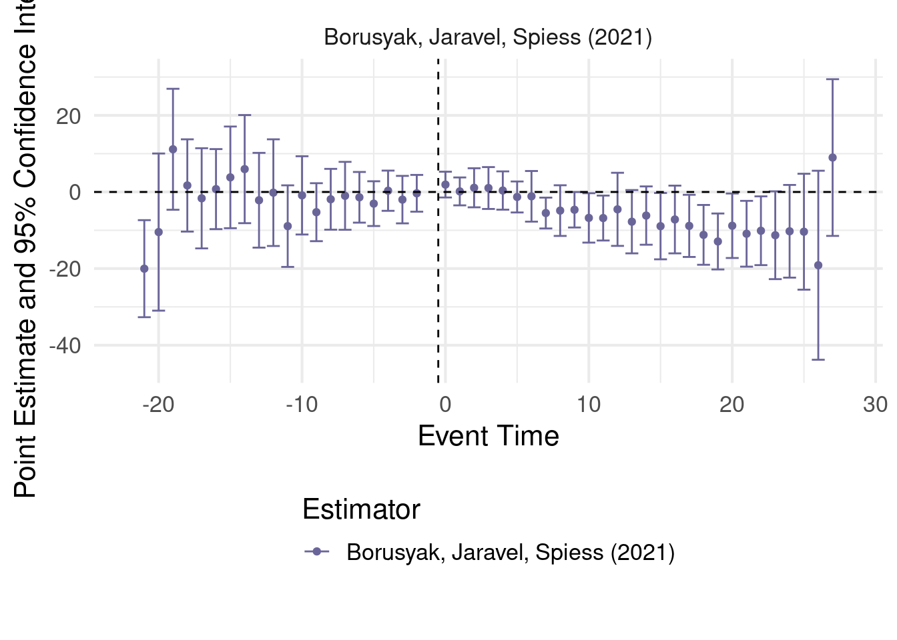
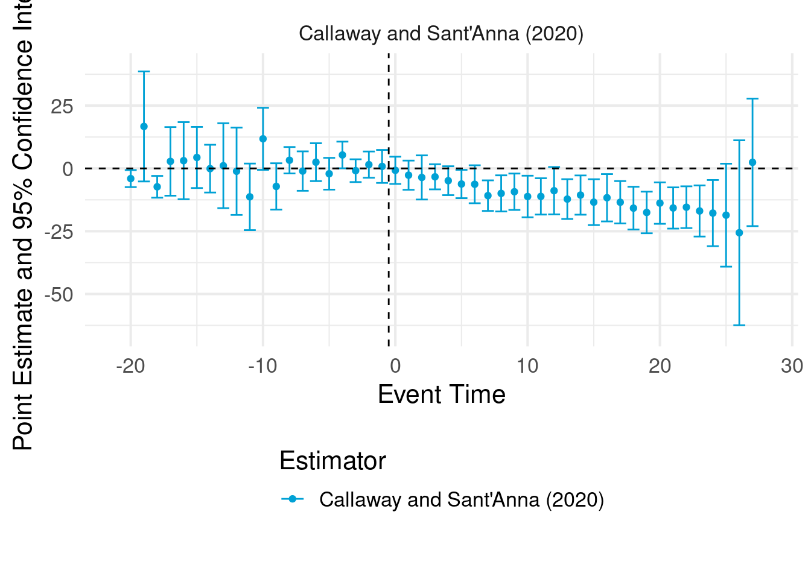
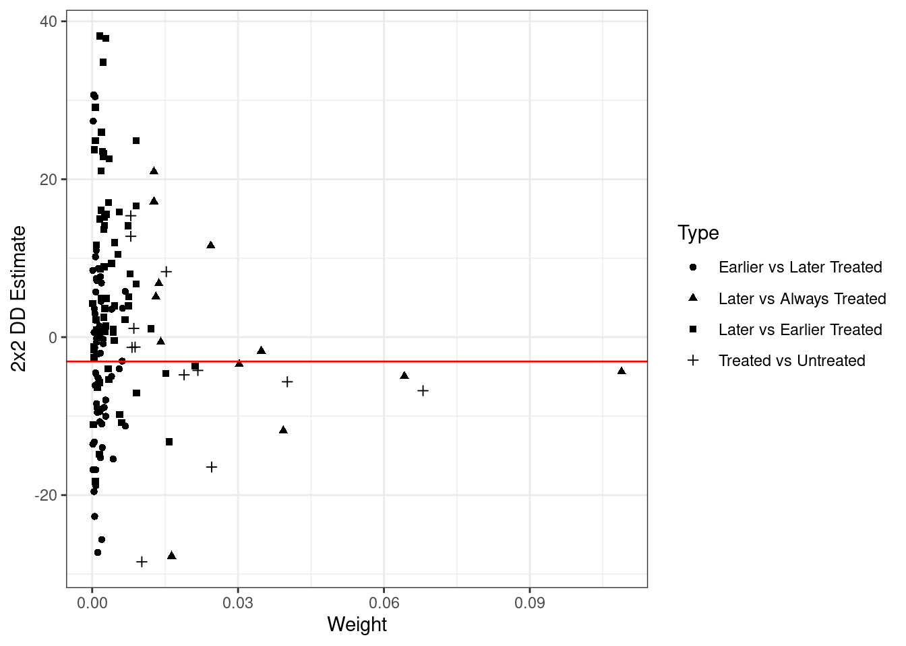
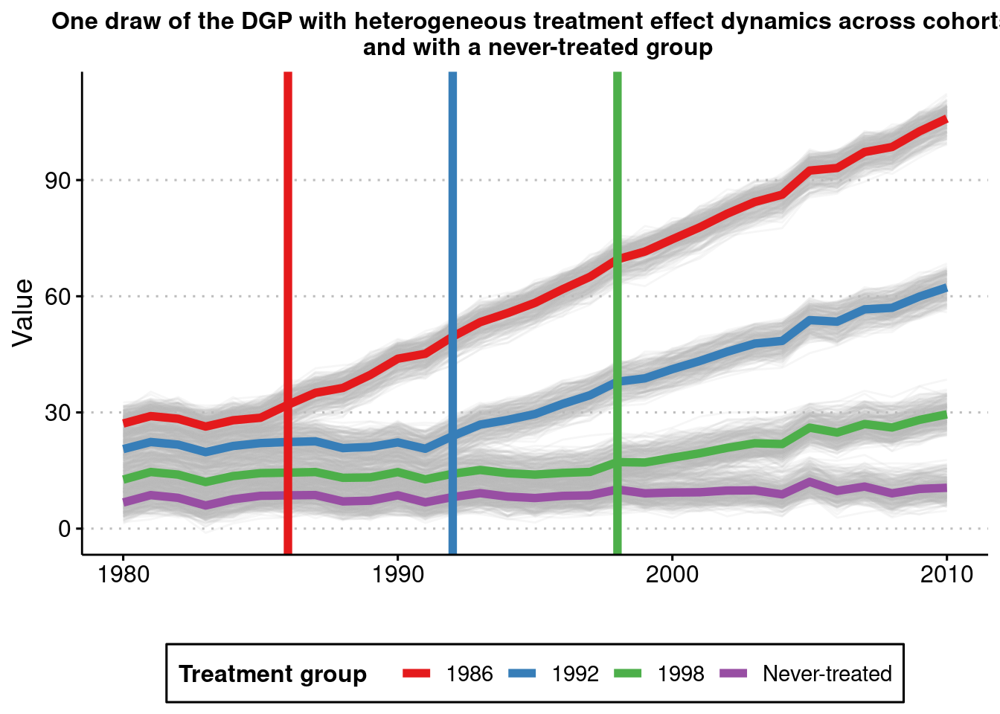
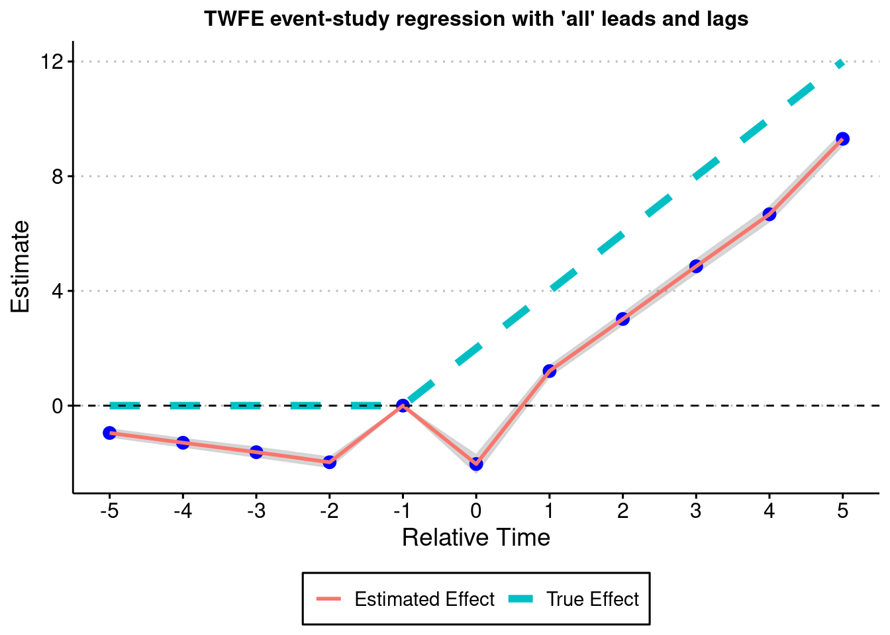
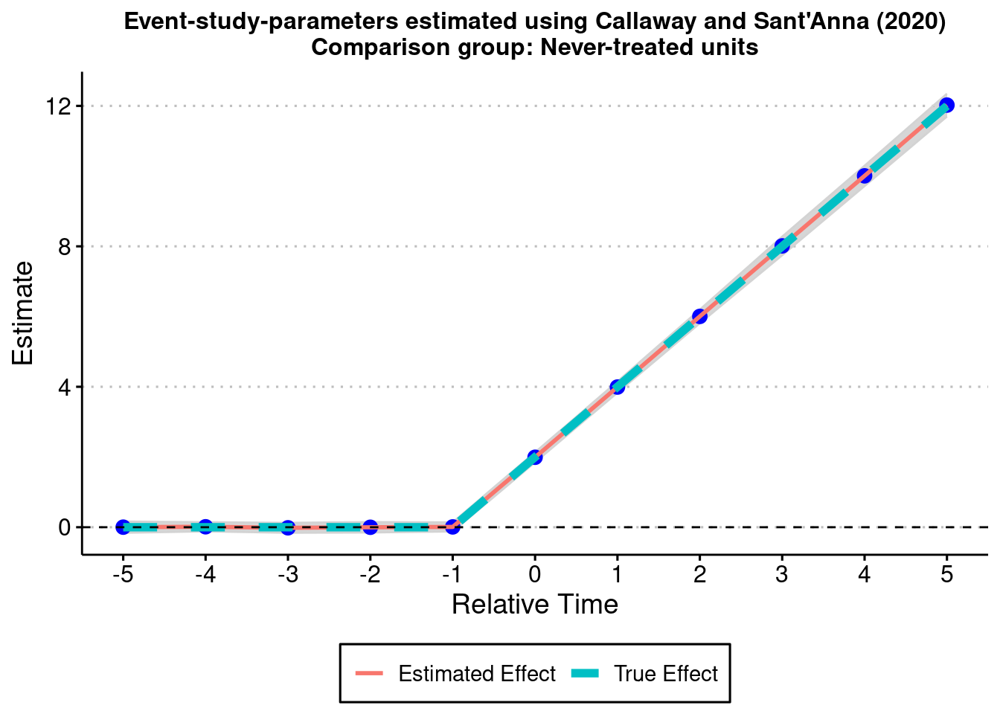
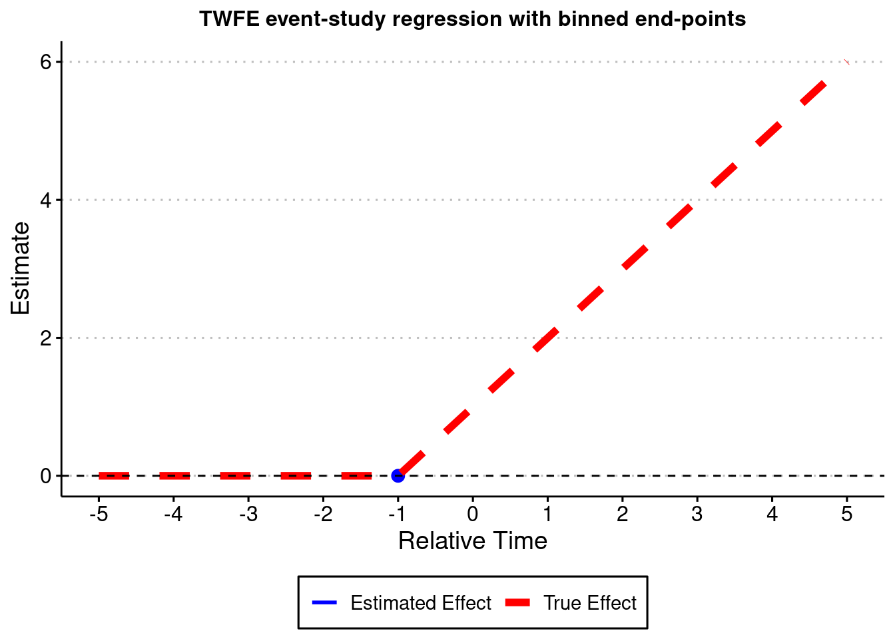

data <- haven::read_dta("data/divorce_example.dta")Problem set 3
1 Replications
1.1 Q1
This paper examines the impact of unilateral divorce on various outcomes such as family violence, reported suicide and spousal homicide. The estimating equation they employ are DiD. They use TWFE model as follows
\[ \text{suicide}_{s,t} = \sum_k \beta_k \, \text{unilateral}_{s,t}^k + \text{state}_s + \text{year}_t + \text{control}_{s,t} + \varepsilon_{s,t}. \]
To be exact, it is dynamic TWFE because we are estimating coefficients for all periods after the treatment. The necessary assumption is parallel trends and no anticiaption. That is, the evolution of the outcome of interest should have been in same magnitude for both treatment and control groups in absence of the treatment. While the assumption seems bit plausible, the problem in this case would be the fact that there can be negative weighting problem for the staggered DiD TWFE model. For the negative weighting problem, we would have to do the new DiD methods to alleviate it. Another possible concern with the identification assumption would be that there can be some confounding factor that is correlated with the treatment. It might be good to check if there were any change in policy that might have happened when the unilateral divorce policy change was happening.
1.2 Q2
Read in the data:
Do some sum stat for suicide rates for men and women (asmrs). We also do sum stat for policy indicator (post):
library(data.table)
library(tidyverse)
library(modelsummary)
setDT(data)
data <- data %>%
mutate(
post = if_else(year >= nfd, 1, 0),
post = if_else(nfd == "PRE", 1, post)
)
# 1. Summary of asmrs by sex
asmrs_tbl <- datasummary_df(
data %>%
mutate(sex=ifelse(sex==1, "male", "female")) %>%
group_by(sex) %>%
summarise(
Mean = mean(asmrs, na.rm = TRUE),
SD = sd(asmrs, na.rm = TRUE),
N = n()
) %>%
mutate(variable = "asmrs") %>%
select(variable, everything()),
output = "data.frame"
)
# 2. Summary of post (no grouping)
post_tbl <- datasummary_df(
data %>%
mutate(sex=ifelse(sex==1, "male", "female")) %>%
summarise(
Mean = mean(post, na.rm = TRUE),
SD = sd(post, na.rm = TRUE),
N = n()
) %>%
mutate(variable = "post") %>%
select(variable, everything()),
output = "data.frame"
)
# 3. Combine both tables
combined_tbl <- bind_rows(asmrs_tbl, post_tbl)
# 4. Show as a table
datasummary_df(combined_tbl, output = "markdown")| variable | sex | Mean | SD | N |
|---|---|---|---|---|
| asmrs | female | 5.06 | 2.88 | 2301.00 |
| asmrs | male | 18.48 | 8.33 | 2301.00 |
| post | NA | 0.53 | 0.50 | 4602.00 |
1.3 Q3
Now we will just run a simple TWFE model.
library(fixest)
library(texreg)
data <- data %>% filter(year>=1964 & year<= 1996)
data <- data %>% mutate(year_post = year - `_nfd`)
data <- data %>% mutate(year_post = ifelse(year_post >=19 | nfd == "PRE", 19, year_post))
data <- data %>% mutate(year_post = ifelse(year_post < 0 | nfd == "NRS", 100, year_post))
data <- data %>%
mutate(
cat_post = case_when(
year_post == 0 ~ 0,
year_post == 1 | year_post == 2 ~ 1,
year_post == 3 | year_post == 4 ~ 3,
year_post == 5 | year_post == 6 ~ 5,
year_post == 7 | year_post == 8 ~ 7,
year_post == 9 | year_post == 10 ~ 9,
year_post == 11 | year_post == 12 ~ 11,
year_post == 13 | year_post == 14 ~ 13,
year_post == 15 | year_post == 16 ~ 15,
year_post == 17 | year_post == 18 ~ 17,
.default = year_post
)
)
data[, ':=' (year_change = 0, year1_2 = 0, year3_4 = 0, year5_6 = 0, year7_8 = 0, year9_10 = 0, year11_12 = 0, year13_14 = 0, year15_16 = 0, year17_18 = 0, year19 = 0)]
data[cat_post == 0, year_change := 1]
data[cat_post == 1, year1_2 := 1]
data[cat_post == 3, year3_4 := 1]
data[cat_post == 5, year5_6 := 1]
data[cat_post == 7, year7_8 := 1]
data[cat_post == 9, year9_10 := 1]
data[cat_post == 11, year11_12 := 1]
data[cat_post == 13, year13_14 := 1]
data[cat_post == 15, year15_16 := 1]
data[cat_post == 17, year17_18 := 1]
data[cat_post == 19, year19 := 1]
# List of dependent variables
sex_var <- c(1,2)
# Map over dependent variables
models <- map(sex_var, ~ feols(as.formula(paste("(asmrs/mean(asmrs))*100 ~ year_change + year1_2 + year3_4 + year5_6 + year7_8 + year9_10 + year11_12 + year13_14 + year15_16 + year17_18 + year19 | year + stfips")), vcov = "HC1", data = data %>% filter(sex == .x)))
names(models) <- c("Male", "Female")
screenreg(models, stars = c(0.1, 0.05, 0.01),
custom.coef.map = list("year_change" = "Year of Change",
"year1_2" = "1-2 Years later",
"year3_4" = "3-4 Years later",
"year5_6" = "5-6 Years later",
"year7_8" = "7-8 Years later",
"year9_10" = "9-10 Years later",
"year11_12" = "11-12 Years later",
"year13_14" = "13-14 Years later",
"year15_16" = "15-16 Years later",
"year17_18" = "17-18 Years later",
"year19" = "19+ Years Later"),
digits = 1, include.adjrs = FALSE, include.proj.stats=FALSE, include.groups=FALSE)
=======================================
Male Female
---------------------------------------
Year of Change -0.1 1.2
(2.1) (4.0)
1-2 Years later 2.3 -1.8
(1.6) (4.0)
3-4 Years later 0.8 -2.0
(1.6) (3.2)
5-6 Years later 1.2 -3.4
(1.6) (3.1)
7-8 Years later 0.4 -9.4 ***
(2.0) (3.1)
9-10 Years later -1.9 -10.9 ***
(1.9) (3.1)
11-12 Years later -0.9 -11.2 ***
(2.2) (3.4)
13-14 Years later -1.1 -12.8 ***
(2.2) (3.4)
15-16 Years later -0.0 -13.7 ***
(2.2) (3.9)
17-18 Years later -1.5 -17.3 ***
(2.1) (3.8)
19+ Years Later -3.5 * -19.8 ***
(2.0) (3.4)
---------------------------------------
Num. obs. 1617 1617
R^2 0.8 0.7
=======================================
*** p < 0.01; ** p < 0.05; * p < 0.1Although the table does not exactly replicate the numbers in the paper, the coefficient estimates follow similar patterns. Compared to male suicidal rates, female suicide rates significantly goes down. This is qualitatively similar to the results in the paper.
1.4 Q4
Let’s create figure 5:
library(broom)
# Run regressions for each sex group using map() and list_rbind()
dd_reg <- map(c(1, 2), function(sex_val) {
model <- feols(asmrs * 10 ~ post | year + stfips,
data = filter(data, sex == sex_val),
vcov = "HC1")
tidy(model) %>% mutate(sex = sex_val)
}) %>% list_rbind()
# Define time mapping
time_map <- setNames(
c(-9:-2, 1:19),
c(paste0("_Texp_", 1:8), paste0("_Texp_", 10:28))
)
# Build formula with safe backtick-wrapped terms
rhs_vars <- paste0("`", names(time_map), "`")
rhs_formula <- paste(rhs_vars, collapse = " + ")
formula_str <- paste0("asmrs * 10 ~ ", rhs_formula, " | year + stfips")
full_formula <- as.formula(formula_str)
# Estimate models and relabel terms
event_did <- map(c(1, 2), function(sex_val) {
model <- feols(full_formula,
data = filter(data, sex == sex_val),
vcov = "HC1")
tidy(model) %>%
mutate(sex = sex_val,
term_clean = str_remove_all(term, "`"), # remove backticks
time = time_map[term_clean]) %>%
select(-term_clean)
}) %>% list_rbind()
# Example: custom yintercepts by sex
hline_df <- tibble(
sex = c("male", "female"),
yintercept = c(-0.52, -3.08)
)
# Optional annotations
annotation_df <- tibble(
sex = c("female", "male"),
x = c(-10, -10),
y = c(-8, -3),
label = c("DD Coef = -3.08 (s.e. = 1.27)", "DD Coef = 0.52 (s.e. = 2.37)")
)
# Compute confidence intervals
event_did_plot <- event_did %>%
mutate(
sex=ifelse(sex==1, "male", "female"),
conf.low = estimate - 1.96 * std.error,
conf.high = estimate + 1.96 * std.error
) %>%
bind_rows(
tibble(estimate = c(0,0), sex = c("male","female"), time = c(-1, -1)))
ggplot(event_did_plot, aes(x = time, y = estimate, ymin = conf.low, ymax = conf.high)) +
geom_vline(xintercept = -1, linetype = "dashed", color = "gray40") +
geom_hline(yintercept = 0, linetype = "solid", color = "gray60") +
geom_pointrange(position = position_dodge(width = 0.5)) +
labs(
x = "Years Relative to Divorce Reform",
y = "Suicides per 1m",
title = "Event Study Estimates with 95% CI"
) +
# Custom facet-specific horizontal lines
geom_hline(data = hline_df, aes(yintercept = yintercept),
linetype = "solid", color = "red", inherit.aes = FALSE) +
# Optional annotation
geom_label(data = annotation_df, aes(x = x, y = y, label = label),
inherit.aes = FALSE, color = "blue", hjust = 0, size = 3.5) +
scale_x_continuous(breaks=c(-8, -4, -1, 3, 7, 11, 15)) +
facet_wrap(~sex, nrow=2) +
theme_bw()
This event study is helpful because it shows the visual heuristics in determining the credibility of the parallel trends. When we look at the pre-trends of the outcomes, we can see that the outcome differences are insignificant. Since this is at least true to female outcome, it supports the paper’s claim of parallel trends assumption. The event study is also helpful in examining some dynamic effects of the outcome of interest over time. We can see that the negative effects on female suicidal rates are mostly driven from effects after 7 years of the policy change.
1.5 Q5
Remember that generalized D-D model averages together following types of effects:
groups that are treated late vs groups that are treated early
groups that are treated early vs groups that are treated late
groups that are always treated vs groups that are treated at some point in the sample period
groups that are never treated vs groups that are treated at some point in the sample period
TWFE estimates can be biased in a staggered adoption setting because effects for some of these groups may receive negative weights. using CH2020 notation, the weights are defined as:
\[ w_{fe,g,t} = \frac{\varepsilon_{fe,g,t}}{\sum_{(g,t): D_{g,t}=1} \frac{N_{g,t}}{N_1} \varepsilon_{fe,g,t}} \]
where \(\varepsilon\) is the residual of the observations in \((g,t)\) cell from the regression of treatment indicator \(D\). You can see that the weights can be negative as \(\varepsilon\) can be negative. According to CH2020, when treatment effects are dynamic and/or heterogeneous, average outcomes across groups may follow different tends across periods, leading to negative weights. Usually groups that stay treated for more periods and periods where a large number of groups are treated are more likely to have negative weights.
1.6 Q6
We now produce alternate versions of the event study using Callaway-Santanna and the BJS imputation estimators. Note that we only do the result for female. First, we give you the event study plot for BJS (2021):
library(did2s)
data_al <- data %>%
filter(nfd != "PRE") %>%
mutate(g = ifelse(nfd == "NRS", NA, nfd))
multiple_ests_w = did2s::event_study(
data = data_al %>%
mutate(asmrs = asmrs * 10, g = as.numeric(g)) %>%
filter(sex==2),
gname = "g",
idname = "stfips",
tname = "year",
yname = "asmrs",
estimator = "impute"
)
plot_event_study(multiple_ests_w)
Next is CS (2020):
multiple_ests_w = did2s::event_study(
data = data_al %>%
mutate(asmrs = asmrs * 10, g = as.numeric(g)) %>%
filter(sex==2),
gname = "g",
idname = "stfips",
tname = "year",
yname = "asmrs",
estimator = "did"
)
plot_event_study(multiple_ests_w)
It seems the result is qualitatively similar to the results in the past paper. That is, we can still see the downward trend after the change in the divorce law. However, the overall dynamic effects seem to be less significant than the results in the past paper. As we mentioned in Q5, this difference might be due to the negative weighting problem. As TWFE also does forbidden comparison between treatment groups and groups that were already treated in the past, the results could be partially biased.
But it is important to note that the effect still seems to exist: After the policy shock, the suicidal rates of female seem to decrease.
1.7 Q7
Now we will replicate Figure 6 in GB2021 using the bacondecomp command. We will but first compute the weights assigned to different categories of estimators:
library(bacondecomp)
data <- data %>% mutate(asm = asmrs * 10)
df_bacon <- bacon(asm ~ post,
data = data,
id_var = "stfips",
time_var = "year") type weight avg_est
1 Earlier vs Later Treated 0.11065 -3.57476
2 Later vs Always Treated 0.38443 -2.49401
3 Later vs Earlier Treated 0.26464 4.91700
4 Treated vs Untreated 0.24027 -5.10410ggplot(df_bacon) +
aes(x = weight, y = estimate, shape = factor(type))+
labs(x="Weight", y = "2x2 DD Estimate", shape = "Type") +
geom_point() +
geom_hline(yintercept=-3.08, colour = "red") +
theme_bw()
Note that the weights are positive for all categories. It seems Earlier vs later cateogry have the lowest weights. Also the only positive average estimates is in later vs earlier treated category. Since is has a weight 0.26, this estimate will be shifting the overall estimate upward toward 0, possibly leading to bias.
2 Sant’anna simulations
We can just use and follow the codes given by Sant’anna. Using it, we can get a plot similar to his figure:
2.1 Q1
library(did)
library(lfe)
library(fastDummies)
library(ggthemes)
theme_set(theme_clean() + theme(plot.background = element_blank()))
iseed = 20201221
nrep <- 100
true_mu <- 1
set.seed(iseed)
## Generate data - treated cohorts consist of 250 obs each, with the treatment effect still = true_mu on average
make_data3 <- function(nobs = 1000,
nstates = 40) {
# unit fixed effects (unobservd heterogeneity)
unit <- tibble(
unit = 1:nobs,
# generate state
state = sample(1:nstates, nobs, replace = TRUE),
unit_fe = rnorm(nobs, state/5, 1),
# generate instantaneous treatment effect
#mu = rnorm(nobs, true_mu, 0.2)
mu = true_mu
)
# year fixed effects (first part)
year <- tibble(
year = 1980:2010,
year_fe = rnorm(length(year), 0, 1)
)
# Put the states into treatment groups
treat_taus <- tibble(
# sample the states randomly
state = sample(1:nstates, nstates, replace = FALSE),
# place the randomly sampled states into 1\{t \ge g \}G_g
cohort_year = sort(rep(c(1986, 1992, 1998, 2004), 10))
)
# make main dataset
# full interaction of unit X year
expand_grid(unit = 1:nobs, year = 1980:2010) %>%
left_join(., unit) %>%
left_join(., year) %>%
left_join(., treat_taus) %>%
# make error term and get treatment indicators and treatment effects
# Also get cohort specific trends (modify time FE)
mutate(error = rnorm(nobs*31, 0, 1),
treat = ifelse((year >= cohort_year)* (cohort_year != 2004), 1, 0),
mu = ifelse(cohort_year==1992, 2, ifelse(cohort_year==1998, 1, 3)),
tau = ifelse(treat == 1, mu, 0),
year_fe = year_fe + 0.1*(year - cohort_year)
) %>%
# calculate cumulative treatment effects
group_by(unit) %>%
mutate(tau_cum = cumsum(tau)) %>%
ungroup() %>%
# calculate the dep variable
mutate(dep_var = (2010 - cohort_year) + unit_fe + year_fe + tau_cum + error) %>%
# Relabel 2004 cohort as never-treated
mutate(cohort_year = ifelse(cohort_year == 2004, Inf, cohort_year))
}
#----------------------------------------------------------------------------
# make data
data <- make_data3()
# plot
plot3 <- data %>%
ggplot(aes(x = year, y = dep_var, group = unit)) +
geom_line(alpha = 1/8, color = "grey") +
geom_line(data = data %>%
group_by(cohort_year, year) %>%
summarize(dep_var = mean(dep_var)),
aes(x = year, y = dep_var, group = factor(cohort_year),
color = factor(cohort_year)),
size = 2) +
labs(x = "", y = "Value", color = "Treatment group ") +
geom_vline(xintercept = 1986, color = '#E41A1C', size = 2) +
geom_vline(xintercept = 1992, color = '#377EB8', size = 2) +
geom_vline(xintercept = 1998, color = '#4DAF4A', size = 2) +
#geom_vline(xintercept = 2004, color = '#984EA3', size = 2) +
scale_color_brewer(palette = 'Set1') +
theme(legend.position = 'bottom',
#legend.title = element_blank(),
axis.title = element_text(size = 14),
axis.text = element_text(size = 12)) +
scale_color_manual(labels = c("1986", "1992", "1998", "Never-treated"),
values = c("#E41A1C", "#377EB8", "#4DAF4A", "#984EA3")) +
ggtitle("One draw of the DGP with heterogeneous treatment effect dynamics across cohorts \n and with a never-treated group")+
theme(plot.title = element_text(hjust = 0.5, size=12))
plot3 
2.2 Q2
We can see that the TWFE estimator is biased downwards. Thus, the estimator does not retrieve the true treatment effects.
# function to run ES DID
run_ES_DiD_sat_never_het <- function(...) {
# resimulate the data
data <- make_data3()
# make dummy columns
data <- data %>%
# make relative year indicator
mutate(rel_year = year - cohort_year)
# get the minimum relative year - we need this to reindex
min_year <- min(data$rel_year * (data$rel_year != -Inf), na.rm = T)
# reindex the relative years
data <- data %>%
mutate(rel_year2 = rel_year) %>%
mutate(rel_year = rel_year - min_year) %>%
dummy_cols(select_columns = "rel_year") %>%
select(-("rel_year_-Inf"))
# make regression formula
indics <- paste("rel_year", (1:max(data$rel_year))[-(-1 - min_year)], sep = "_", collapse = " + ")
keepvars <- paste("rel_year", c(-5:-2, 0:5) - min_year, sep = "_")
formula <- as.formula(paste("dep_var ~", indics, "| unit + year | 0 | state"))
# run mod
mod <- felm(formula, data = data, exactDOF = TRUE)
# grab the obs we need
# grab the obs we need
mod2 <- tibble(
estimate = mod$coefficients,
term1 = rownames(mod$coefficients)
)
es <-
mod2 %>%
filter(term1 %in% keepvars) %>%
mutate(t = c(-5:-2, 0:5)) %>%
select(t, estimate)
es
}
data_sat_never_het <- map_dfr(1:nrep, run_ES_DiD_sat_never_het)
ES_plot_sat_never_het <- data_sat_never_het %>%
group_by(t) %>%
summarize(avg = mean(estimate),
sd = sd(estimate),
lower.ci = avg - 1.96*sd,
upper.ci = avg + 1.96*sd) %>%
bind_rows(tibble(t = -1, avg = 0, sd = 0, lower.ci = 0, upper.ci = 0)) %>%
mutate(true_tau = ifelse(t >= 0, (t + 1)* 2, 0)) %>%
ggplot(aes(x = t, y = avg)) +
#geom_linerange(aes(ymin = lower.ci, ymax = upper.ci), color = 'darkgrey', size = 2) +
geom_ribbon(aes(ymin = lower.ci, ymax = upper.ci), color = "lightgrey", alpha = 0.2) +
geom_point(color = 'blue', size = 3) +
geom_line(aes(color = 'Estimated Effect'), size = 1) +
geom_line(aes(x = t, y = true_tau, color = 'True Effect'), linetype = "dashed", size = 2) +
geom_hline(yintercept = 0, linetype = "dashed") +
scale_x_continuous(breaks = -5:5) +
labs(x = "Relative Time", y = "Estimate") +
theme(axis.title = element_text(size = 14),
axis.text = element_text(size = 12))+
ggtitle("TWFE event-study regression with 'all' leads and lags")+
# scale_color_manual(values = colors) +
theme(plot.title = element_text(hjust = 0.5, size=12),
legend.position = "bottom",
legend.title = element_blank())
ES_plot_sat_never_het 
2.3 Q3
Again we use Sant’anna’s code to replicate. Now it seems the esimates match the true effects:
# function to run ES DID
run_CS_never_het <- function(...) {
# resimulate the data
data <- make_data3()
data$cohort_year[data$cohort_year==Inf] <- 0
mod <- did::att_gt(yname = "dep_var",
tname = "year",
idname = "unit",
gname = "cohort_year",
control_group= "nevertreated",
bstrap = FALSE,
data = data,
print_details = FALSE)
event_std <- did::aggte(mod, type = "dynamic")
att.egt <- event_std$att.egt
names(att.egt) <- event_std$egt
# grab the obs we need
broom::tidy(att.egt) %>%
filter(names %in% -5:5) %>%
mutate(t = -5:5, estimate = x) %>%
select(t, estimate)
}
data_CS_never_het <- map_dfr(1:nrep, run_CS_never_het)
ES_plot_CS_never_het <- data_CS_never_het %>%
group_by(t) %>%
summarize(avg = mean(estimate),
sd = sd(estimate),
lower.ci = avg - 1.96*sd,
upper.ci = avg + 1.96*sd) %>%
mutate(true_tau = ifelse(t >= 0, (t + 1)* 2, 0)) %>%
ggplot(aes(x = t, y = avg)) +
#geom_linerange(aes(ymin = lower.ci, ymax = upper.ci), color = 'darkgrey', size = 2) +
geom_ribbon(aes(ymin = lower.ci, ymax = upper.ci), color = "lightgrey", alpha = 0.2) +
geom_point(color = 'blue', size = 3) +
geom_line(aes(color = 'Estimated Effect'), size = 1) +
geom_line(aes(x = t, y = true_tau, color = 'True Effect'), linetype = "dashed", size = 2) +
geom_hline(yintercept = 0, linetype = "dashed") +
scale_x_continuous(breaks = -5:5) +
labs(x = "Relative Time", y = "Estimate") +
theme(axis.title = element_text(size = 14),
axis.text = element_text(size = 12))+
ggtitle("Event-study-parameters estimated using Callaway and Sant'Anna (2020)\nComparison group: Never-treated units")+
# scale_color_manual(values = colors) +
theme(plot.title = element_text(hjust = 0.5, size=12),
legend.position = "bottom",
legend.title = element_blank())
ES_plot_CS_never_het
2.4 Q4
In this case, estimates of TWFE will do good job in retrieving the true effects.
## Generate data - treated cohorts consist of 250 obs each, with the treatment effect still = true_mu on average
make_data4 <- function(nobs = 1000,
nstates = 40) {
# unit fixed effects (unobservd heterogeneity)
unit <- tibble(
unit = 1:nobs,
# generate state
state = sample(1:nstates, nobs, replace = TRUE),
unit_fe = rnorm(nobs, state/5, 1),
# generate instantaneous treatment effect
#mu = rnorm(nobs, true_mu, 0.2)
mu = true_mu
)
# year fixed effects (first part)
year <- tibble(
year = 1980:2010,
year_fe = rnorm(length(year), 0, 1)
)
# Put the states into treatment groups
treat_taus <- tibble(
# sample the states randomly
state = sample(1:nstates, nstates, replace = FALSE),
# place the randomly sampled states into 1\{t \ge g \}G_g
cohort_year = sort(rep(c(1986, 1992, 1998, 2004), 10))
)
# make main dataset
# full interaction of unit X year
expand_grid(unit = 1:nobs, year = 1980:2010) %>%
left_join(., unit) %>%
left_join(., year) %>%
left_join(., treat_taus) %>%
# make error term and get treatment indicators and treatment effects
# Also get cohort specific trends (modify time FE)
mutate(error = rnorm(nobs*31, 0, 1),
treat = ifelse((year >= cohort_year)* (cohort_year != 2004), 1, 0),
mu = 10, #ifelse(cohort_year==1992, 2, ifelse(cohort_year==1998, 1, 3)),
tau = ifelse(treat == 1, mu, 0),
year_fe = year_fe + 0.1*(year - cohort_year)
) %>%
# calculate cumulative treatment effects
group_by(unit) %>%
mutate(tau_cum = cummax(tau)) %>%
ungroup() %>%
# calculate the dep variable
mutate(dep_var = (2010 - cohort_year) + unit_fe + year_fe + tau_cum + error) %>%
# Relabel 2004 cohort as never-treated
mutate(cohort_year = ifelse(cohort_year == 2004, Inf, cohort_year))
}
# function to run ES DID
run_ES_DiD_sat_never_het_4 <- function(...) {
# resimulate the data
data <- make_data4()
# make dummy columns
data <- data %>%
# make relative year indicator
mutate(rel_year = year - cohort_year)
# get the minimum relative year - we need this to reindex
min_year <- min(data$rel_year * (data$rel_year != -Inf), na.rm = T)
# reindex the relative years
data <- data %>%
mutate(rel_year2 = rel_year) %>%
mutate(rel_year = rel_year - min_year) %>%
dummy_cols(select_columns = "rel_year") %>%
select(-("rel_year_-Inf"))
# make regression formula
indics <- paste("rel_year", (1:max(data$rel_year))[-(-1 - min_year)], sep = "_", collapse = " + ")
keepvars <- paste("rel_year", c(-5:-2, 0:5) - min_year, sep = "_")
formula <- as.formula(paste("dep_var ~", indics, "| unit + year | 0 | state"))
# run mod
mod <- felm(formula, data = data, exactDOF = TRUE)
# grab the obs we need
# grab the obs we need
mod2 <- tibble(
estimate = mod$coefficients,
term1 = rownames(mod$coefficients)
)
es <-
mod2 %>%
filter(term1 %in% keepvars) %>%
mutate(t = c(-5:-2, 0:5)) %>%
select(t, estimate)
es
}
data_sat_never_het_4 <- map_dfr(1:nrep, run_ES_DiD_sat_never_het_4)
ES_plot_sat_never_het_4 <- data_sat_never_het_4 %>%
group_by(t) %>%
summarize(avg = mean(estimate),
sd = sd(estimate),
lower.ci = avg - 1.96*sd,
upper.ci = avg + 1.96*sd) %>%
bind_rows(tibble(t = -1, avg = 0, sd = 0, lower.ci = 0, upper.ci = 0)) %>%
mutate(true_tau = ifelse(t >= 0, 10, 0)) %>%
ggplot(aes(x = t, y = avg)) +
#geom_linerange(aes(ymin = lower.ci, ymax = upper.ci), color = 'darkgrey', size = 2) +
geom_ribbon(aes(ymin = lower.ci, ymax = upper.ci), color = "lightgrey", alpha = 0.2) +
geom_point(color = 'blue', size = 3) +
geom_line(aes(color = 'Estimated Effect'), size = 1) +
geom_line(aes(x = t, y = true_tau, color = 'True Effect'), linetype = "dashed", size = 2) +
geom_hline(yintercept = 0, linetype = "dashed") +
scale_x_continuous(breaks = -5:5) +
labs(x = "Relative Time", y = "Estimate") +
theme(axis.title = element_text(size = 14),
axis.text = element_text(size = 12))+
ggtitle("TWFE event-study regression with homogenous and constant treatment effects")+
# scale_color_manual(values = colors) +
theme(plot.title = element_text(hjust = 0.5, size=12),
legend.position = "bottom",
legend.title = element_blank())
ES_plot_sat_never_het_4